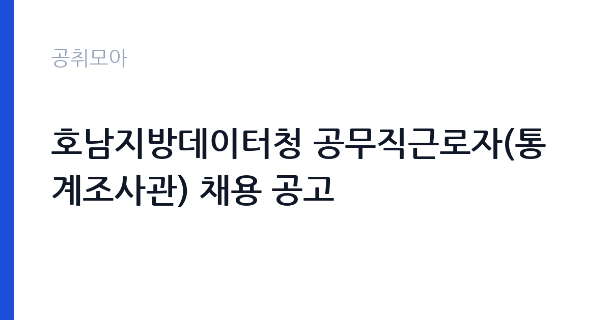

[국가기관] 호남지방데이터청 공무직근로자(통계조사관) 채용 공고
국가데이터처 호남지방데이터청 · 전국 · 마감 2026-11-11 (D-7) · 출처 나라일터

한눈에 보는 모집 조건
| 기관 | 국가데이터처 호남지방데이터청 |
|---|---|
| 공고명 | 호남지방데이터청 공무직근로자(통계조사관) 채용 공고 |
| 고용형태 | 공무직 |
| 근무지 | 전국 |
| 게시일 | 2026-11-04 |
| 마감일 | 2026-11-11 (D-7) |
지원자격, 이렇게 읽으세요
- 공무직근로자 14명
- 접수 ~2026-11-11 마감
- 세부 조건은 원문 공고문 확인
공무직 근로자는 공무원이 아니라 근로기준법이 적용되는 근로자이지만 기간의 정함이 없는 무기계약으로 채용되는 경우가 많아 정년까지 근무가 가능합니다. 채용은 공무원 시험과 달리 기관의 자체 전형으로 진행되고 인사 규정과 임금표를 적용받습니다. 이번 공고는 국가데이터처 호남지방데이터청에서 직접 진행하는 자체 전형으로, 응시자격과 제출서류는 공고문에 항목별로 제시됩니다. 이 공고는 호남지방데이터청 공무직근로자(통계조사관) 14명을 뽑는 채용입니다. 응시자격과 제출서류는 공고문에 정리되어 있으므로 원문을 확인해야 합니다. 통계조사 업무는 학력 제한이 크지 않은 대신 조사 방식과 전산 입력을 실무에서 익히므로, 조사원 경험이나 지역 지리를 아는 것이 실질적인 강점이 됩니다. 근무지가 전국 단위로 표시되어 있어 실제 배치 지역을 공고문에서 확인해야 합니다. 공무직 채용이므로 결격사유 조회와 신원 확인 절차가 따릅니다. 서류는 접수 마감 이후 보완이 되지 않으므로 자격 요건과 증빙 서류를 마감 전에 모두 갖춰야 합니다. 공고문에 명시된 우대 사항은 해당 여부를 확인해 증빙을 첨부해야 가점이 반영됩니다. 학력이나 전공 요건이 없는 공고라도 제출서류 목록은 그대로 적용되므로 서류 준비 부담은 줄지 않습니다.
이 공고의 포인트
이 공고의 첫 번째 포인트는 고용 형태입니다. 무기계약으로 채용되면 정년까지 근무가 가능해 재계약 부담이 없습니다. 반대로 기간제로 채용되는 공고라면 계약 기간을 먼저 확인해야 합니다. 두 번째는 업무 범위가 명확하다는 점입니다. 통계조사관(공무직) 직무로 채용되므로 배치 이후 담당 업무가 크게 흔들리지 않습니다. 세 번째는 근무지입니다. 전국 단위 채용이라 희망 근무지와 실제 배치 지역을 함께 확인해야 합니다. 근무 조건이 공고문에 구체적으로 적혀 있어 지원 전에 판단할 정보가 충분합니다. 선발 인원이 14명으로 규모가 있어 서류와 면접 점수를 함께 관리하는 전략이 필요합니다.
전형은 어떻게 진행되나
서류전형과 면접전형 외에 직무수행능력 평가가 붙는 경우가 있습니다. 평가 방식은 공고문에 구체적으로 적혀 있으므로 어떤 항목에 배점이 높은지 먼저 파악하십시오. 면접에서는 지원 동기보다 실제 업무 경험에 대한 질문이 많고, 답변의 구체성이 평가를 가릅니다. 전형 일정은 서류 마감 이후 빠르게 진행되므로 연락 가능한 번호를 정확히 기재하고 문자와 메일을 수시로 확인해야 합니다. 최종 단계에서는 결격사유 조회와 신체검사가 진행됩니다. 동점자 처리 기준이 공고문에 명시되어 있으니 배점 항목을 미리 확인해 두십시오.
이런 분께 추천해요
- 조사·입력 업무 경험이 있는 분
- 응답자 응대와 재방문 일정 관리가 가능한 분
- 공고문의 배치 지역과 근무 조건을 확인한 분
지원 전 체크리스트
- 응시자격 요건과 경력 기준을 충족하는가 — 경력은 증명서로 입증해야 합니다
- 무기계약 여부와 정년 기준을 공고문에서 확인했는가
- 제출서류 목록을 모두 준비했는가 — 누락 시 서류 단계에서 탈락합니다
- 접수 마감 2026-11-11 이전에 접수 방식을 확인해 제출했는가
모집 일정과 제출 타이밍
접수 마감은 2026-11-11이고 공고는 2026-11-04에 게시되었습니다. 준비 기간 7일 안에 서류 작성, 증빙 발급, 접수를 모두 마쳐야 하므로 주말을 포함해 일정을 미리 나누는 것이 좋습니다. 특히 경력 기술서나 직무수행계획서를 요구하는 공고는 작성에 시간이 걸리므로 첫날 초안을 잡으십시오. 서류 합격자 발표와 면접 사이 간격이 짧은 경우가 많아 면접 예상 질문은 서류 제출 전에 정리해 두는 편이 유리합니다. 마감 직전에는 접속이 몰리므로 여유를 두고 제출하십시오. 임용 예정일이 빠르게 잡히는 공고이므로 현재 일정과 겹치지 않는지 미리 확인하십시오. 전국 단위 채용이라 지원 시 희망 근무지를 함께 고르는 경우가 많습니다. 배치 가능한 지사와 지역을 공고문에서 확인하십시오. 마감까지 일주일 안팎이 남아 서류 준비와 증빙 발급을 병행해야 합니다. 선발 인원이 한 자릿수를 넘어 서류와 면접 점수를 함께 관리하는 전략이 필요합니다.
직무 이해하기: 국가기관
국가데이터처 호남지방데이터청 통계조사관은 지역 통계의 수집과 정리를 담당합니다. 지정된 표본 가구와 사업체를 방문해 조사 항목을 확인하고 응답을 전산에 입력합니다. 조사표를 지참해 방문하고 조사 목적과 비밀 보호를 설명한 뒤 항목별 응답을 받습니다. 조사 기간이 정해져 있어 기간 안에 배정된 표본을 모두 처리해야 하고, 부재나 거절 시 재방문 일정을 잡습니다. 응답 내용은 통계 목적 외에 사용할 수 없어 비밀 유지 의무가 엄격합니다. 이번 공고는 공무직근로자 14명을 뽑는 규모 있는 채용입니다. 직무 교육은 입사 후 기관 자체 계획에 따라 진행되므로 사전 경험이 없어도 시작할 수 있습니다.
자기소개서 작성 팁
지원서는 조사·입력 업무 경험을 구체적으로 쓰는 것이 효과적입니다. 담당했던 조사 건수와 완료율, 사용한 전산 시스템을 제시하십시오. 지역 지리를 잘 안다는 점은 통계조사에서 실질적인 강점이므로 거주지와 조사 구역의 관계를 한 줄 넣으면 좋습니다. 공무직으로 장기 근무하겠다는 의사를 분명히 밝히십시오. 직무 경험이 많지 않다면 경험의 양보다 과정을 구체적으로 쓰는 편이 낫습니다. 어떤 상황에서 무엇을 판단했고 어떤 결과가 나왔는지 순서대로 서술하면 신뢰가 생깁니다. 지원 동기와 기여 방안은 한 문단씩 짧게 유지하고, 가장 자신 있는 경험에 분량을 몰아주십시오. 마지막 문장은 포부보다 구체적인 실행 계획으로 끝내는 것이 좋습니다.
면접 준비 포인트
면접에서는 조사 실무와 응대 태도를 확인합니다. 응답자가 조사를 거부할 때 어떻게 설득할지, 부재가 반복되는 가구를 어떻게 처리할지 묻습니다. 조사 내용의 비밀 유지 의무를 어떻게 이해하고 있는지도 평가 요소입니다. 조사원으로 근무한 경험이 있다면 담당 표본 수와 완료율을 구체적으로 답하십시오. 답변은 상황, 판단, 조치의 순서로 정리하면 전달이 분명해집니다. 모르는 질문에는 모른다고 밝히고 확인 방법을 제시하는 편이 억지 답변보다 낫습니다. 마지막에는 근무 의사와 함께 2026-11-11 이후 일정에 언제든 응할 수 있다는 점을 전달하십시오. 지원 기관의 최근 사업이나 조직 개편 내용을 확인해 두면 지원 동기 질문에서 차이가 납니다.
급여·근무조건 읽는 법
국가데이터처 소속 공무직근로자는 공무직 임금 기준을 적용받고, 기본급에 정액급식비·명절휴가비·복지포인트·초과근무수당이 더해집니다. 무기계약으로 채용되면 정년까지 근무가 가능하고 호봉이 오르면 임금이 조정됩니다. 조사 업무는 현장 이동이 많아 여비나 초과근무수당이 붙는 경우가 있으므로 공고문 처우 항목을 확인하십시오. 확인되지 않은 금액은 이 글에서 제시하지 않습니다. 2026년 적용 최저임금은 시급 10,320원, 월 환산 2,156,880원(주 40시간·209시간 기준)입니다. 고용노동부 고시 제2025-47호로 확정된 금액입니다. 공고문에 금액이 제시되지 않은 항목은 원문 보수표나 처우 설명에서 확인해야 하며 확인되지 않은 수치는 쓰지 않는 것이 원칙입니다. 비교할 때는 월 급여뿐 아니라 상여·명절휴가비·복지포인트·초과근무수당까지 포함한 연간 총액으로 계산하십시오. 기간제라면 계약 기간 동안의 총액을, 무기계약이라면 호봉 상승과 정년까지의 누적 소득을 기준으로 판단하는 편이 정확합니다.
자주 묻는 질문
- 선발 인원은 몇 명인가요?
공고문 기준 14명입니다. 직종별로 인원이 나뉘는 경우가 있으니 모집분야 항목을 함께 확인하십시오. - 근무지는 어디인가요?
전국 지역의 국가데이터처 호남지방데이터청 소속 근무지입니다. 세부 주소와 출퇴근 조건은 원문 공고문에서 확인할 수 있습니다. - 보수는 얼마인가요?
채용 신분(공무직)과 기관 임금 규정에 따라 정해지며 구체적인 금액은 공고문 처우 항목에 제시됩니다. 금액이 공개되지 않은 경우에는 원문의 보수표를 확인하십시오.
함께 보면 좋은 공고
[국가기관] 2026년 제7회 광양우체국 상시계약집배원 채용 공고 — 마감 2026-11-12[국가기관] 제8회 서천우체국 기간제 상시계약집배원(농어촌) 채용 재공고 — 마감 2026-11-12[국가기관] 해병대 덕산대 체력단련장(경기 화성) 공무직근로자 (경기담당) 채용 공고 — 마감 2026-11-13출처: 나라일터 공개정보를 바탕으로 공취모아가 정리한 안내글입니다. 모집 조건·일정은 변경될 수 있으니 지원 전 반드시 원문 공고문을 확인하세요. 본 글은 정보 제공용이며 합격을 보장하지 않습니다.